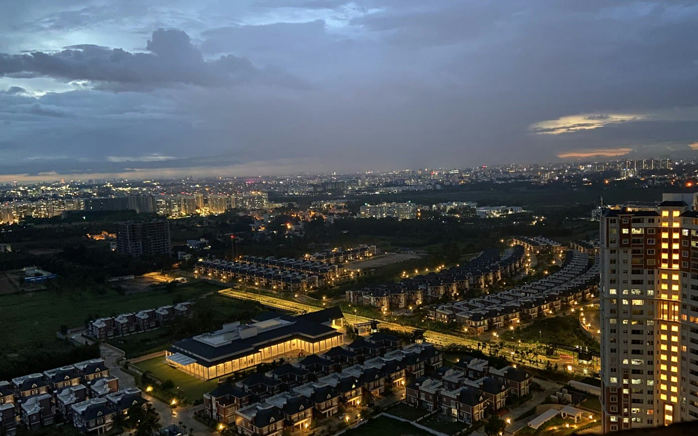
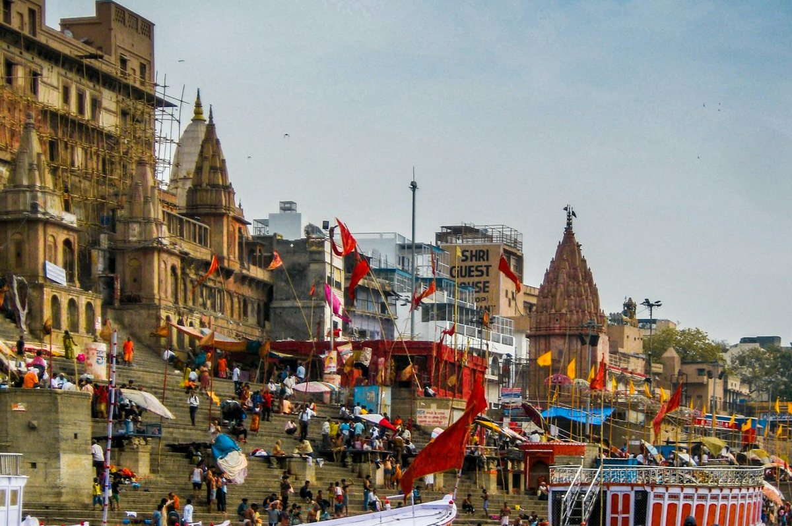

Orient
Guides for Śrāddha, Pitṛ Pakṣa, gotra & yātrā — labelled where custom differs.
Heritage care · वार्षिक सेवा
Scroll the story.
Then · निरंतरता
Gotra spoken aloud. A priest who knew the house. Pitṛ Pakṣa marked on the wall calendar. Stories told in the same courtyard, year after year.
Ancestral care lived close to place — water, temple, hometown. The year’s observances were not apps; they were rhythm.
Now · विस्मृति
The calendar continues. The memory thins.
Setu · सेतु
Premium annual heritage care — for families who want gotra, lineage, and yearly observances held with clarity. Temple-quiet. Hindi and English. A verified priest who knows your tradition confirms what applies.
Practices vary by family. No funeral or acute rites — post-rites stewardship.
Explore · विषय
Tap a word. Short stories open here — guides wait if you want depth.
A lineage marker many priests ask for when framing annual rites. Write what you know — fragments still help. Sampradaya and hometown custom sit beside it.
Read the gotra & lineage guide →The ancestral fortnight in many North Indian calendars — when families renew remembrance. Dates shift with the lunar year; preparation beats last-minute scramble.
Read Śrāddha & Pitṛ Pakṣa →Yearly remembrance — often on a death-anniversary tithi. Who leads, what is offered, and where it is done vary. Orientation first; your priest confirms form.
Read the Śrāddha guide →Pilgrimage remembrance — including Pind Daan journeys some families undertake. Not every year; not every house. When travel is right, plan with region and priest in mind.
Read Pind Daan as pilgrimage →The quiet inheritance: who used to lead, which stories made ancestors feel known, what the next generation should not have to guess.
Record lineage & stories →Observances due in India while you are abroad — or the reverse. Dates, a priest who understands your region, and written gotra so children inherit more than a vague sense.
Read NRI continuity →How care moves
A calm path — not a video, not noise. Subtle motion if your device allows.
Guides for Śrāddha, Pitṛ Pakṣa, gotra & yātrā — labelled where custom differs.
Your roadmap — need, region, gotra if known, where you are. We draft an outline.
A verified priest confirms dates and form with your tradition — then you keep the year.
Lives · स्थान
Different cities. Same need to keep the thread.
New Jersey · NRI
Pitṛ Pakṣa and her father’s tithi arrive mid-quarter. Some years she travels; some years she cannot. She needs dates, a priest who knows the family’s region, and gotra written down so her children inherit more than a feeling.
Delhi · Post-rites family
The first rites have settled. What remains is the first annual Śrāddha, a wish to record gotra and hometown custom, and cousins who should know what “we always did” actually means.

Bengaluru · Urban house
Work weeks swallow weekends. She wants a short outline — who to call, which tithi, what to write for the next generation — without another frantic WhatsApp chain the night before.

Banaras / Kashi · Partner priest
A priest serves best when a family already knows region, approximate gotra or sampradaya, and what they hope to observe. A draft roadmap means better questions — rites that match the lineage, not a generic script.
Outcomes · फल
Roadmap · मार्ग
See the path here — then open WhatsApp with a short form.
Śrāddha, Pitṛ Pakṣa, yātrā, gotra notes, or family stories.
Ancestor relation, family region, gotra if known, where you are based.
Your answers open a chat. We draft an outline and discuss next steps.
A verified priest confirms what applies to your lineage before you act.
Stewardship
DharmaSetu is premium annual heritage care — a quiet bridge between your family’s memory and a priest who can confirm what applies.
A short heritage roadmap — what you need, for whom, region, gotra if known, where you are. Your answers open WhatsApp so we can continue with care.
Begin the WhatsApp roadmap